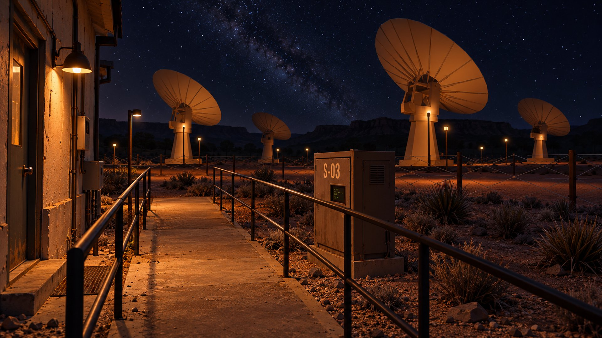
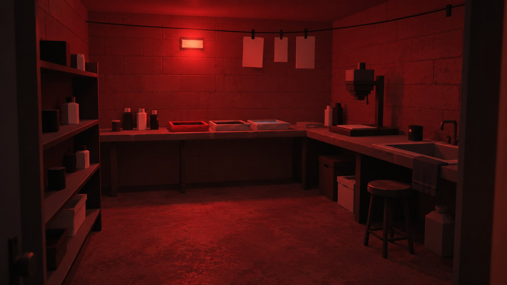
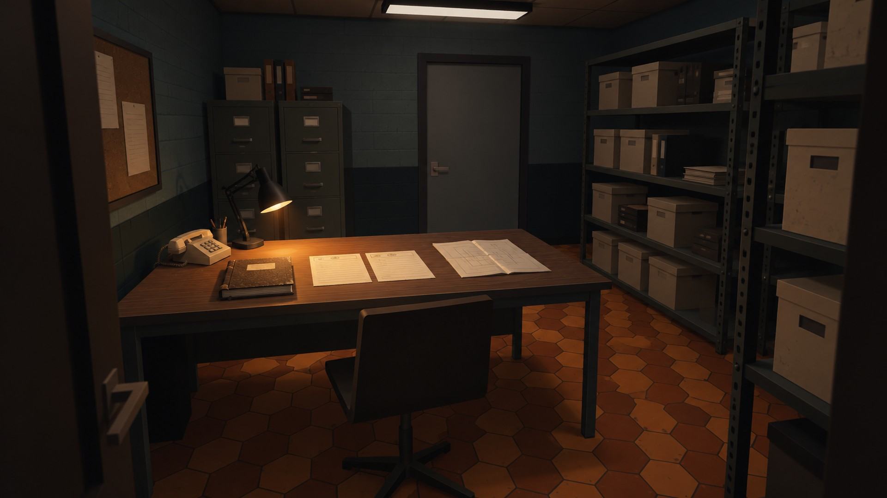
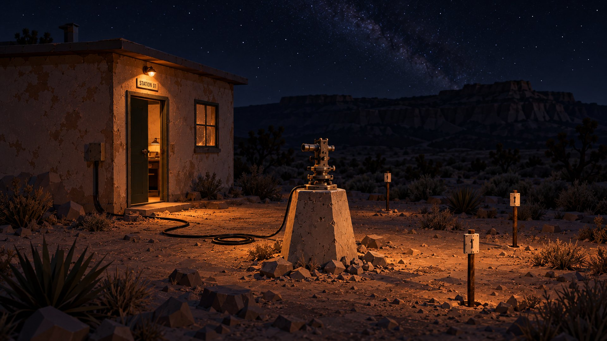
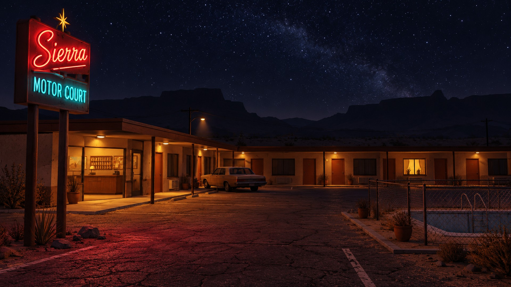
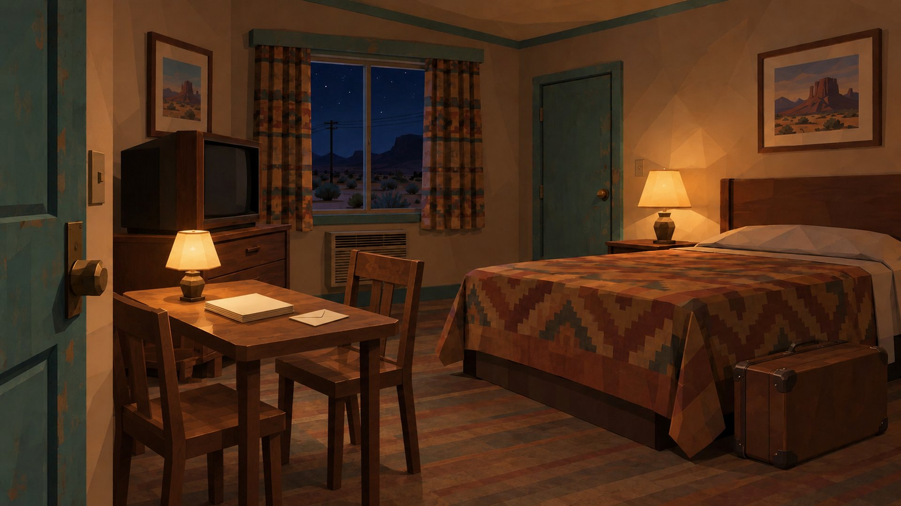
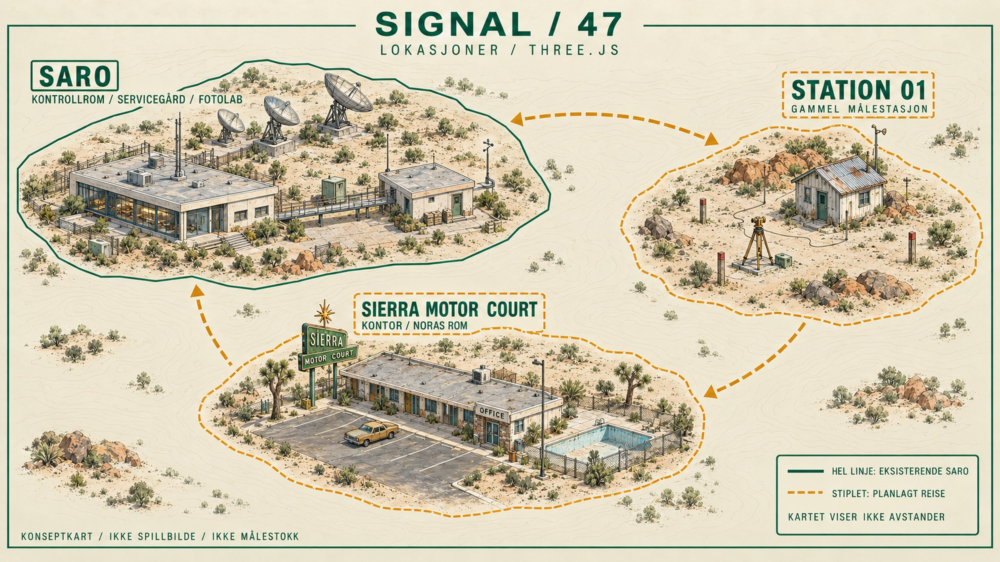
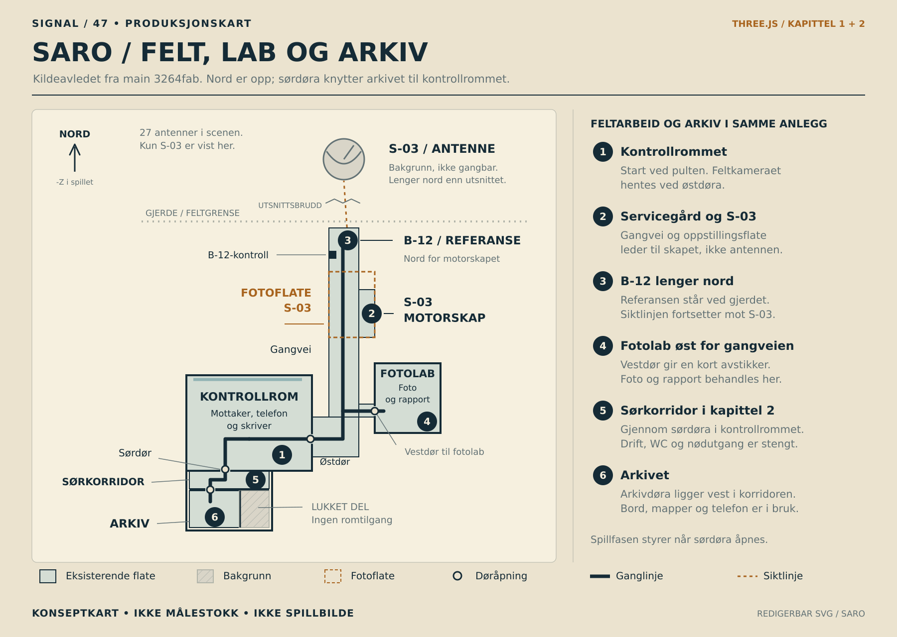
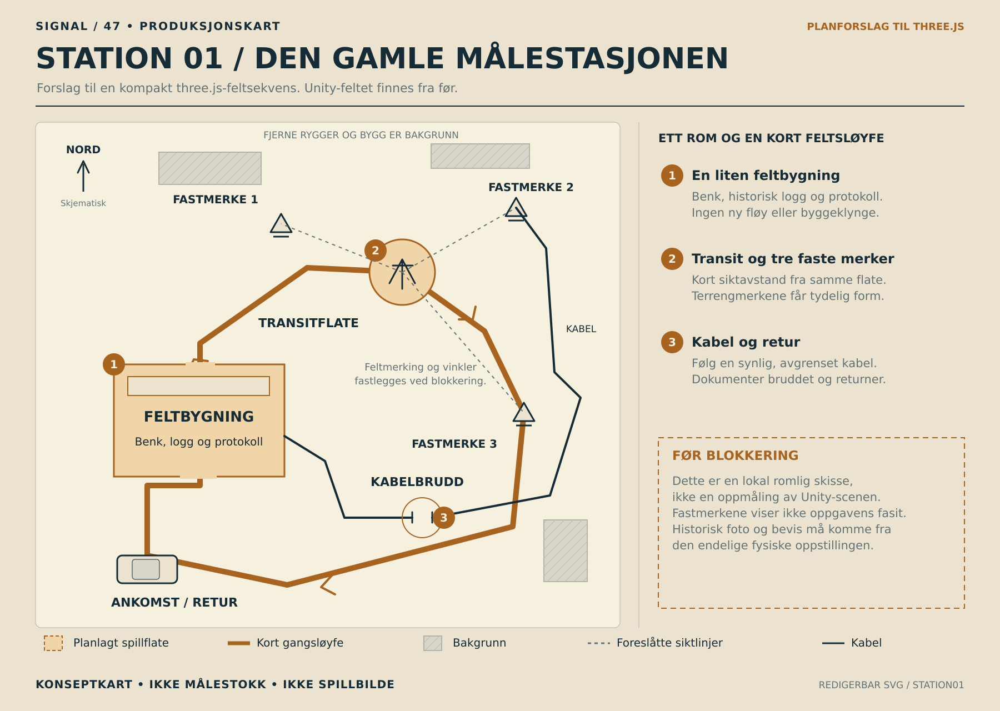
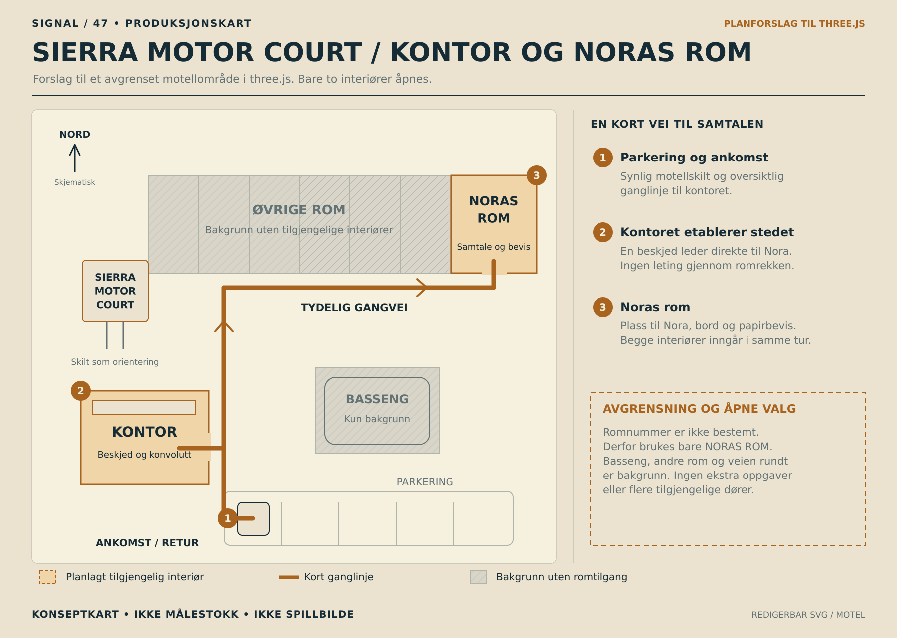

SIGNAL / 47
New Mexico · 1986 · Three.js
Røde arbeidslys, slitte rom og blå ørkennatt. En samling miljøkonsepter og kart som utforsker spillets videre visuelle retning.
Miljøer
De to første bildene videreutvikler områder som er bygd i nettversjonen. De øvrige utforsker planlagt spilleinnhold.

Servicegården
En videre visuell retning for passasjen ut til S-03. Området finnes i nettversjonen; dette bildet viser et konsept for miljøet.


Fotolaben
Rødt mørkeromslys over en liten arbeidsbenk. Konseptet bygger på funksjonen og romtypen i den eksisterende fotolaben.


SARO-arkivet
Materialer, arbeidslys og romfølelse for arkivet. Konseptbildet er en stilreferanse; kapittel 2s faktiske arkiv finnes nå i spillkoden.


Feltstasjonen
Et forslag til et kompakt feltområde i ørkenen. Plassering, geometri og fremtidige interaksjoner er ikke bekreftet av bildet.


Sierra Motor Court
Motellutsiden finnes foreløpig som bakgrunn i nettversjonen. Dette konseptet utforsker et mulig område spilleren senere kan besøke.


Motellrommet
Rom 6 etter den oppdaterte briefen: to stoler, bordlampe og papirbevis. Den eldre varianten er bevart som ch3_room47.jpg.

Kart
Illustrert oversikt og planer for rom og bevegelse. Kartene har ulikt kildegrunnlag, angitt under hvert bilde.

Områdene i sammenheng
En illustrert oversikt for visuell orientering. Avstander, retninger og skala skal ikke leses som et eksakt kart over spillets verden.


SARO
En skjematisk plan avledet fra den eksisterende spillkoden. Kartet følger main på 3264fab og viser kontrollrom, servicegård, fotolab, sørkorridor og det bygde arkivet. Døråpninger og soner er kontrollert mot koden.


Feltstasjonens oppbygning
Et forslag til plassering og bevegelse gjennom feltområdet. Planen viser ikke et ferdig eller vedtatt spillområde.


Motellets oppbygning
Et mulig oppsett for motellet som spilleområde. Planen er fra før rom 6 ble registrert som avklart i Claude-grenen; romfordelingen er fortsatt et forslag.